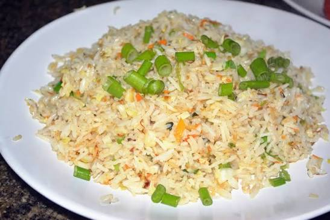

Fried Rice Recipe

Description
Fried Rice is a savory, classic dish made with cooked rice stir-fried in a wok or pan with mixed vegetables, herbs, and aromatics. It features a light, fluffy texture with colorful veggies and chopped green onions sprinkled on top.
Quick and easy to make, this dish works wonderfully as a main meal or as a side paired with chicken, beef, or seafood.
Ingredients
- 3 cups cooked long-grain rice (preferably cooled or leftover)
- 2 tablespoons vegetable oil or sesame oil
- 1/2 cup finely diced carrots
- 1/2 cup green peas or chopped green beans
- 1/2 cup finely chopped spring onions (scallions)
- 2 cloves garlic, minced
- 1 teaspoon ginger, minced
- 2 tablespoons soy sauce
- 1/2 teaspoon white pepper or black pepper
- Salt to taste
Steps
- Heat vegetable oil in a large skillet or wok over medium-high heat.
- Add the minced garlic, ginger, and the white parts of the spring onions. Sauté for about 1 minute until fragrant.
- Add the diced carrots and green peas (or green beans) to the skillet and cook for 2–3 minutes until slightly tender.
- Stir in the cooked rice, breaking up any clumps so the grains separate evenly.
- Drizzle the soy sauce over the rice and sprinkle with salt and pepper. Stir-fry continuously for 3–5 minutes until the rice is thoroughly heated and evenly coated.
- Turn off the heat, garnish generously with the chopped green spring onions, and serve warm.
Home